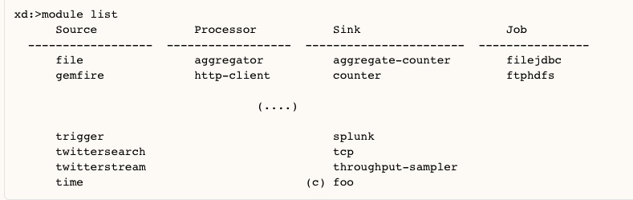

Spring XD
分布式、实时数据流分析工具
Created by Li Yuntao / @dust_jead
04/17/2015
Overview
Spring XD 是一个统一的、分布式、可扩展的服务。它用于数据获取、实时分析、批量处理、数据导出。
Use Cases
- 从多种输入源进行高吞吐量的数据获取和存储
- 在获取数据的同时进行实时分析
- 通过批处理作业进行流程管理。作业(Jobs)与标准的企业系统交互
- 高吞吐量的数据导出 e.g. from HDFS to a RDBMS or NoSQL database.
Getting Started
运行环境
Java JDK7 或更高版本
获取与安装
启动
Spring XD 有两种运行模式，single-node和multi-node
- single-node是由单独的进程负责所有处理和管理的工作。用于入门、应用程序的快速开发和测试。
- multi-node是分布式模式，用于生产环境
Spring XD 结构
Wire Tap 模式
点对点通道通常用于文档消息因为他们保证只有一个消费者将消费每条消息。然而，对于测试、监控与调试，需要使用某种途径可以获取所有穿过通道的消息。

Wire tap 模式通过在信道中插入一个收件人列表，当消息流过时，分发给主信道和辅助信道。
领域概念
Stream
在 Spring XD 中, 流被定义为由事件驱动的数据，从一个Source到Sink，中间可以经过任意数量的Processor.
流处理在XD容器中进行，而流的定义和部署经由 XD Admin Server 完成。
Modules
模块由类型分类，可以由名称和分类轻易的区分模块的作用和功能。
在当前版本，Module包括source, sink, processor和job
Modules
Modules
- Source: 源通过轮询外部资源，或者由事件触发。它只提供输出。在一个流定义中，第一个模块必须是源。
- Processor: 处理器用于执行某特定类型的任务，它使用消息作为输入并产生一个新的消息。因此它即需要输入也需要输出。
- Sink: 消费输入的消息并将数据输出到外部资源，最终终止该流。
- A job module implements a Spring Batch job enabled for Spring XD.
Shell commands
Pipes and filters
A simple linear stream consists of a sequence of modules. Typically an Input Source, (optional) Processing Steps, and an Output Sink. As a simple example consider the collection of data from an HTTP Source writing to a File Sink. Using the DSL the stream description is:
Module parameters
Each module may take parameters. The parameters supported by a module are defined by the module implementation. As an example the http source module exposes port setting which allows the data ingestion port to be changed from the default value.
Module parameters
Streams are composed of modules which encapsulate a unit of work into a reusable component. A job in Spring XD must also be implemented as a module.
Named channels
Streams are composed of modules which encapsulate a unit of work into a reusable component. A job in Spring XD must also be implemented as a module.
其他
Labels, Single quotes, Double quotes, Escaping
Demo展示01
启动runtime;启动shell;创建一个简单的流：ticktock; 查看Admin UI
-
启动流：
xd:> stream create --name ticktock --definition "time | log" --deploy -
销毁流：
xd:>stream destroy --name ticktock
Demo展示02
基于twitter stream API 的实时分析

THE END
参考文档：
- Spring XD Guide
- HOWTO: Spring XD for Real Time Analytics With Twitter Example Code